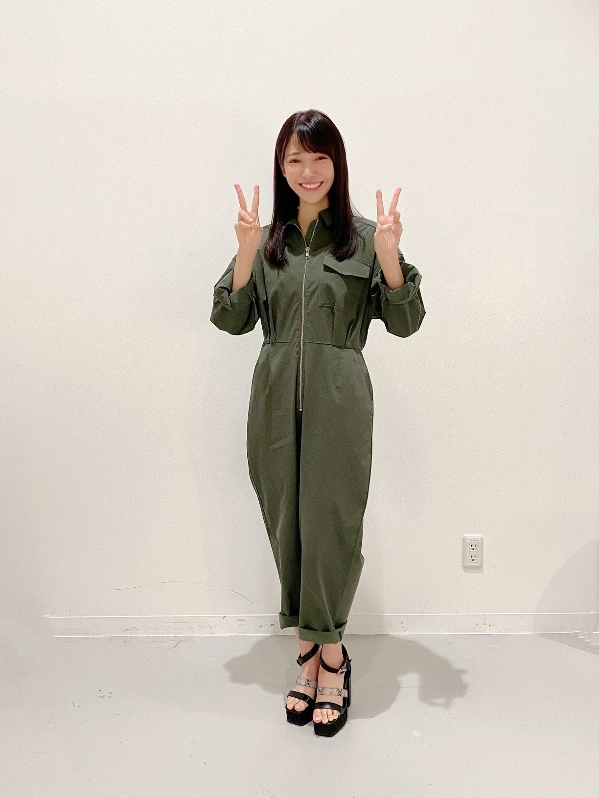
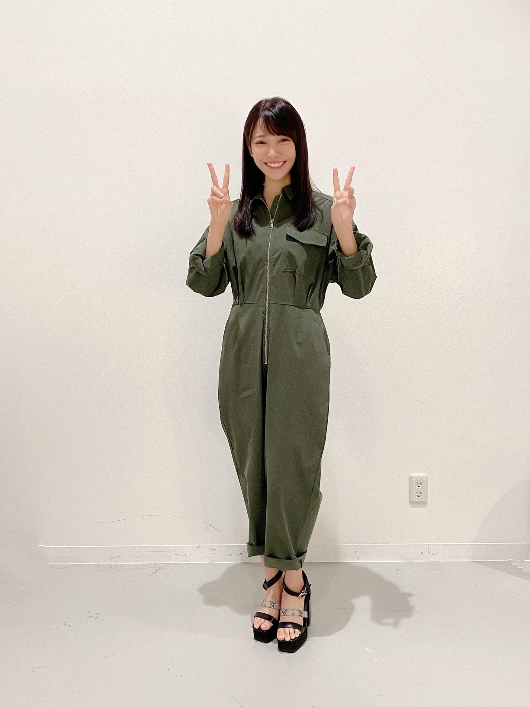

2020/0929Tueありがとう ☺︎ サイリウムカラー決まったよ！黒見明香(16)
月末だね！今日も、お仕事や勉強、一日お疲れ様でした✩︎⡱
ココを見つけてくださり ありがとうございます♪
乃木坂46 新４期生の黒見明香です。
すこーしだけ自己紹介させてください☺︎
♪:*:･･:*:･･:*:･･:*:･･:*:･･:*:･♪:*:･･:*:･･:*:･･:*:･･:*:･･:*:･♪
黒見 明香（くろみ はるか）
2004年1月19日生まれ 16才
香港生まれ・東京都出身です
あだ名： くろみん・黒見ちゃん
3の倍数9・6・3(くろみ)
と覚えてもらえたら嬉しいです♪
＊
に決定しました！
♬ *。♩*。♬
⚫︎サイリウムヌンチャク発売求む...作りたいですか？
【 のぎおび☺︎ 】
♬ *。♩*。♬
♪:*:･･:*:･･:*:･･:*:･･:*:･･:*:･♪:*:･･:*:･･:*:･･:*:･･:*:･･:*:･♪

-:-:୨୧:-:- ただ今発売中の9月生写真「ジャンプスーツ」オフショットも安定のダブルピース\(//∇//)\いつも同じポーズすぎて恥ずかしい・・・
【 ダブルピース写真シリーズ☺︎ 】

-:-:୨୧:-:- 「のびおび」のカボチャ、実は前日描いたマイパンプキンでしたー！笑
読んでくださり、本当にありがとうございます☺︎
次回も、会えたら嬉しいなぁ✨
またねヾ(･ω･*)
くろみはるか☺︎
☆ 本日のあなたのラッキーナンバー：❹ と ❻
♪:*:･･:*:･･:*:･･:*:･･:*:･･:*:･♪:*:･･:*:･･:*:･･:*:･･:*:･･:*:･♪
・
・
・
＜ちょこっとアンコール♬笑＞
⚫︎珍しい名前ですね。黒木さんといえば宮崎県がルーツの人が多いようですが黒見さんはどこかルーツがあるのでしょうか？
西日本、中国地方の可能性が高そうですーヾ(･ω･*)o
♬ *。♩*。♬
⚫︎寮生活で、海外の方と一緒に住むのでちょっぴり不安なのですが、便利な英語ってありますか？
⚫︎写真みたいに記憶されてるのわかる！人や物に強い興味があるんだと思います。覚えてたことで人を助けることができてから、これに悩むことはなくなりました。
♬ *。♩*。♬
♬ *。♩*。♬
10月2日は林瑠奈ちゃん♡
10月3日は遠藤さくらちゃん♡
お誕生日ですね♪
そして、お誕生日を迎えるあなたへ・・
✨HAPPY BIRTHDAY✨
どうぞ素敵な一年になりますよう✩︎⡱
♪:*:･･:*:･･:*:･･:*:･･:*:･･:*:･♪:*:･･:*:･･:*:･･:*:･･:*:･･:*:･♪
ここまで読んでくださったアナタ、ほんとうにありがとう♡
またねヾ(･ω･*)
ココを見つけてくださり ありがとうございます♪
乃木坂46 新４期生の黒見明香です。
すこーしだけ自己紹介させてください☺︎
♪:*:･･:*:･･:*:･･:*:･･:*:･･:*:･♪:*:･･:*:･･:*:･･:*:･･:*:･･:*:･♪
黒見 明香（くろみ はるか）
2004年1月19日生まれ 16才
香港生まれ・東京都出身です
あだ名： くろみん・黒見ちゃん
3の倍数9・6・3(くろみ)
と覚えてもらえたら嬉しいです♪
＊
↓頂いたコメントからー
◎ポンコツエピソード大好きです笑 引き続きよろしく！
中学生の体育の時間に
「かべ逆立ち」を習っていたら、
上下左右 頭がすっかり混乱して・・・
壁のない方に向かって逆立ちしてみたり、
壁を背中にしゃがんで
後ろ足でカブト虫みたいに、
壁をよじ登っていったりと・・・
周りの子がドン引きしてたよ・・・Σ（ﾟдﾟll）汗
＊
ノギザカスキッツで聖来ちゃんがお話ししてた
「回るとどっちが右か分からない・・・」に
心から共感しています(*´-`)wow wow
♪:*:･･:*:･･:*:･･:*:･･:*:･･:*:･♪:*:･･:*:･･:*:･･:*:･･:*:･･:*:･♪

-:-:୨୧:-:- あなた（乃木坂の紫）✖️わたし（いつも真っ直ぐな初心で、癒せる存在に☺︎）手伝ってくれて本当にありがとう〜✩︎⡱
-:-:୨୧:-:- あなた（乃木坂の紫）✖️わたし（いつも真っ直ぐな初心で、癒せる存在に☺︎）手伝ってくれて本当にありがとう〜✩︎⡱
【 サイリウムカラー✨ 】
サイリウムカラー、相談のってくれて本当にありがとうー!!
皆んなのアドバイス、一つ一つ大切に読ませて貰ったよー((〃ω〃))
いっぱい、いっぱい考えて・・・
✨紫 ＆ 緑✨
----*----*----*----*
紫：あなたのこと・乃木坂を支えてくださる大切な皆さんのことだよ♡
緑：わたしの目標・初心・謙虚さを胸に、あなたの癒しの存在になりたい☺︎
----*----*----*----*
に決定しました！
＊
組み合わせ表を送ってくれたり、
皆んなのお勧めカラーを集計！して教えてくれたり、、、と
何度も見返して、参考にさせて貰ったよー♬
新4期の5人にも相談して
（みんなじっくーり悩み中だよ、ゆっくり待っててあげて下さいね☺︎）
・
・
・
◎一つはあなたの色
大切な乃木坂を支えて、一緒に坂を登る大好きな皆んなの色
やっぱり『紫』だなぁ〜て思いました♡
◎一つはわたしの目標
担任の先生が"今どき珍しい真っ直ぐでピュアな子です"と
書いてくださった事があります。
今の胸いっぱいの"初心"、
思い出深い"神宮の緑"
『努力・感謝・笑顔』
わたしの緑で、いつかあなたの茎や枝、葉っぱになれたら...
癒しやリラックスできる存在になれたら嬉しいな✨
という想いを込めました！
＊
✩︎誕生色...(リーフグリーン)
優しさ・自尊心・精神性 、
何ごとも一生懸命な努力家
もすごく心に響いたよー(*´-`)
＊
皆んなの紫と
わたしの緑が 寄り添った時に、
色がすごく綺麗だなぁ。。。て思ったことも
決定打になりました (*ˊᵕˋ*)੭✨
「推してる」人にとって、色ってとても大事だよ！
ってアドバイスくださった皆んなもありがとうー！
これから「紫✖️緑」で一緒にたくさん想い出を作りたいな♪
どうぞよろしくお願いします☺︎
♬ *。♩*。♬
ハッピーベイビーのあだ名や、向日葵の明るい色、
香港やブルース・リーさん、カンフーのカッコいいイメージ、
名前の「黒見(クロミ)」から２色で黒になる組み合わせ、黒黒、黒緑、
クロミちゃん(キャラクター)の黒桃、
混ぜると紫になる２色、カラーコードの色、963数字の星の色、
誕生花、誕生日カラー、ワンピースのイメージ、
尊敬する先輩の色、憧れの先輩の色、背番号を受け継いでほしい、
単色がいい！一色で染まる会場は本当に感動的、
直感で、自分の好きを貫いていいんだよ、、、などなど
いっぱいコメント送って下さり本当にありがとう✩︎⡱
アドバイス本当に、力になりましたヾ(･ω･*)o✨
いつかか・・・ヌンチャク個人ライト！？笑
カッコいいオリジナルライトも作ってみたいなぁ・・・夢です(*´-`)笑
♪:*:･･:*:･･:*:･･:*:･･:*:･･:*:･♪:*:･･:*:･･:*:･･:*:･･:*:･･:*:･♪
 -:-:୨୧:-:- のぎおびスクショタイム "ミニハロウィン"ありがとうございました☺︎♡
-:-:୨୧:-:- のぎおびスクショタイム "ミニハロウィン"ありがとうございました☺︎♡
-:-:୨୧:-:- のぎおびスクショタイム "ミニハロウィン"ありがとうございました☺︎♡【 のぎおび☺︎ 】
嬉しすぎることに、
昨日「のぎおび」配信させていただきました！
8月4日の新4期生ウィーク以来の、２回目！
忙しい週始めから見てくださって、本当にありがとうー☺︎
＊
なんだか、まだまだ緊張しちゃって・・・・
硬くなっちゃったりしてごめんなさい><
次回は最後まで、
柔らかく気楽な感じで見てもらえるように
リラックス配信目指すね (*ˊᵕˋ*)੭✨
＊
コメントも沢山送ってくれて、ホントにありがとうー!!
読ませて貰って、すっごくパワーが出て、嬉しかったよー♪
皆んなのおかげで、とても楽しい時間だったよ〜✩︎⡱
『見逃しちゃったよー><』て方も、
よかったら、ぜひスマートニュースさんの
"アフタートーク" 見てみてくださいねヾ(･ω･*)o
あのお話・・・してるよ〜☺︎笑
♬ *。♩*。♬
⚫︎明日は真夏さんだね！リスペクトしてる先輩に宿題出せてよかったね✨
びっくりして、とても嬉しかったです✩︎⡱
⚫︎明日は真夏さんだね！リスペクトしてる先輩に宿題出せてよかったね✨
びっくりして、とても嬉しかったです✩︎⡱
大好きな真夏さんに「猫耳置いて行ったらー？」
というコメントいただいて、たしかに〜!!と思ったのですが、
真夏さん♡は 数々の伝説を造られた✨
✨アイドルレベルMAX✨のずっきゅん王国の国王様なので、
猫耳は当たり前に、飛び超えて来られる気もします☺︎♡
今日の配信もドッキドキ、楽しみですね〜♪
♬ *。♩*。♬
♪:*:･･:*:･･:*:･･:*:･･:*:･･:*:･♪:*:･･:*:･･:*:･･:*:･･:*:･･:*:･♪

-:-:୨୧:-:- ただ今発売中の9月生写真「ジャンプスーツ」オフショットも安定のダブルピース\(//∇//)\いつも同じポーズすぎて恥ずかしい・・・
【 ダブルピース写真シリーズ☺︎ 】
⚫︎ 生写真のオフショットシリーズ、本当に大好き。もっと見たいな。
探しても、さがしても・・・
写真フォルダから出てくるのが
毎回『ダブルピース』の写真ばかりで、
自分でもドン引きです・・・( ´_ゝ`)のぉぉ
＊
特に、気が抜けている待機中に
マネージャーさんが撮ってくださると、
だいたいワンパターンの模様です・・・汗
＊
⚫︎生写真でもお得意のダブルピースのショットがあっても面白そう！
採用していただけるかなぁ・・・( ꒪⌓︎꒪)
いつか、ダブルピースコレクション、出来る日が！？笑
先輩方の可愛い、美しいポーズからいっぱい学んで、
もっとバラエティ増やせるよう頑張るねー♪
（生写真集めてるよー！てコメントや感想もありがとう〜☺︎）
恒例！？ダブルピースシリーズ笑 はこちらだよ〜↓
♪:*:･･:*:･･:*:･･:*:･･:*:･･:*:･♪:*:･･:*:･･:*:･･:*:･･:*:･･:*:･♪
-:-:୨୧:-:- 「のびおび」のカボチャ、実は前日描いたマイパンプキンでしたー！笑
（相変わらず、絵が下手で、なんだか不気味・・・汗）
【 TOKYO IDOL FESTIVAL オンライン2020 】
♪:*:･･:*:･･:*:･･:*:･･:*:･･:*:･♪:*:･･:*:･･:*:･･:*:･･:*:･･:*:･♪
ブログやお手紙で、たくさんのコメントや感想送って下さり
本当にありがとうございます✩︎⡱
今回初めてコメントしてみたよー！というあなたも、
何回目のコメントなんだーと送ってくれるあなたも、
大切な時間を使ってお話しして下さり
本当にありがとうございます✨
あなたに出逢えた奇跡に、感謝しながら、
大事に、一つずつ全部読ませて頂いています((〃ω〃))
皆さんのことを知ることが出来る、
私の１日の中で『１番幸せな時間』です♩
直接お話しできる時が、 待ち遠しいです✩︎⡱
＊
すっかり寒くなってきちゃって、
【 TOKYO IDOL FESTIVAL オンライン2020 】
⚫︎TIFサイリウムカラーは見えないかもしれないけど、HEARTは届くかな〜？
うん！心の目で見ます (*ˊᵕˋ*)੭✨ぜひぜひ楽しんで下さいねー!!
⚫︎そういえばくろみんは円陣はまだやってないよねー？？乃木中でも少し話題になってたから少し気になっちゃった！
実は、2月の名古屋ドームでのバースデーライブの時に、
新4期生も、円陣に入れて頂いたの...！
先輩方のオーラが美しすぎて、緊張して足ガクガクしながら
奈於ちゃんが5人を代表して挨拶してくれました。
本当にあたたかく見守って下さり、拍手してくださり、
忘れられない瞬間です✩︎⡱
初心を胸に刻んでこれからの円陣も一つ一つ、大切にするね✨
♬ *。♩*。♬
✩︎⡱ 本日 梅澤美波さん♡の写真集「夢の近く」発売日ですねー！
意志が強くて、繊細で優しくて、カッコよすぎる美波さん✨
先日、たまたま隣にいらした美波さんが、
すっごく気さくに、振り返って質問してくださって、
嬉しくて一人で心の中で、感激していました((〃ω〃))
わたしもしっかり予約していますー！（特典はポスカにしました☺︎）
みんなも発送待ちかなー？本屋さんかな？楽しみですね♡
♬ *。♩*。♬
✩︎⡱ 10月2日  林瑠奈ちゃんお誕生日
オーディションの時から2年以上、8、9番とずっと隣にいてくれて、優しくて、とても心強い存在です。周りをすごくよく見ていてくれて、愛と勇気をもってアドバイスしてくれたりツッ込んでくれてるるなぴ。いつも笑ってくれると幸せな気持ちになります♪困ったときに一緒に相談して解決してくれるところも頼りにしているよー！お誕生日おめでとうー (*ˊᵕˋ*)੭✨
✩︎⡱ 10月3日 遠藤さくらちゃんお誕生日
お話しする時いつも優しい笑顔でうんうんと聞いてくれて、時々「えーそんな事ないよー」と照れちゃうところも、本当に可愛くて大好きです。一人でもいっぱい倍努力を重ねてる後ろ姿、キラキラしている瞳も憧れのさくらちゃん。お誕生日おめでとうー (*ˊᵕˋ*)੭✨
ブログやお手紙で、たくさんのコメントや感想送って下さり
本当にありがとうございます✩︎⡱
今回初めてコメントしてみたよー！というあなたも、
何回目のコメントなんだーと送ってくれるあなたも、
大切な時間を使ってお話しして下さり
本当にありがとうございます✨
あなたに出逢えた奇跡に、感謝しながら、
大事に、一つずつ全部読ませて頂いています((〃ω〃))
皆さんのことを知ることが出来る、
私の１日の中で『１番幸せな時間』です♩
直接お話しできる時が、 待ち遠しいです✩︎⡱
＊
すっかり寒くなってきちゃって、
なんだか風邪気味だよー、疲れちゃったよーって方も
本当に、今日も一日 お疲れ様でした✩︎⡱
きっと心も、身体も、しんどい時もあるかと思います。。
どうぞ、皆さんが 少しでも
ひとときリラックスできますように...✩︎⡱
と願っています(*´-`)
初めて会える日を、楽しみに待っています♪
＊
明日は、璃果ちゃんですよー♬
本当に、今日も一日 お疲れ様でした✩︎⡱
きっと心も、身体も、しんどい時もあるかと思います。。
どうぞ、皆さんが 少しでも
ひとときリラックスできますように...✩︎⡱
と願っています(*´-`)
初めて会える日を、楽しみに待っています♪
＊
明日は、璃果ちゃんですよー♬
" 璃果ちゃん、バナナミルク美味しいんだって！"
（伝言ゲームじゃないよby奈於ちゃん☺︎）
読んでくださり、本当にありがとうございます☺︎
次回も、会えたら嬉しいなぁ✨
またねヾ(･ω･*)
くろみはるか☺︎
☆ 本日のあなたのラッキーナンバー：❹ と ❻
♪:*:･･:*:･･:*:･･:*:･･:*:･･:*:･♪:*:･･:*:･･:*:･･:*:･･:*:･･:*:･♪
・
・
・
＜ちょこっとアンコール♬笑＞
♬ *。♩*。♬
⚫︎珍しい名前ですね。黒木さんといえば宮崎県がルーツの人が多いようですが黒見さんはどこかルーツがあるのでしょうか？
西日本、中国地方の可能性が高そうですーヾ(･ω･*)o
コメントで教えていただいたよ〜↓
よく電話でも「くるみさん？くろいさん？」と聞かれたり、
新学期の出席簿で「里見あすかさん」と呼ばれることが多く、
「だいたいそんな感じです」と答えたらとっても怒られました・・・\(//∇//)\汗
♬ *。♩*。♬
⚫︎トマトマリネもミートソースもどちらも食べたくなっちゃいましたー
♬ *。♩*。♬
⚫︎トマトマリネもミートソースもどちらも食べたくなっちゃいましたー
クロミンイーツで届けてくれないかな？
⚪︎クロミンイーツ！良いですねヾ(･ω･*)o
いつか真夏さん♡みたいに、作って食べてもらいたいなー✨
⚫︎お弁当に入ってたら嬉しいオカズは何？
⚪︎卵焼き、からあげ、肉じゃが嬉しいです☺︎
⚪︎卵焼き、からあげ、肉じゃが嬉しいです☺︎
なんでも美味しく食べちゃうタイプです笑
皆んなの好きなおかずは何かなぁ・・・？
♬ *。♩*。♬
⚫︎寮生活で、海外の方と一緒に住むのでちょっぴり不安なのですが、便利な英語ってありますか？
⚪︎なんだろうー 聞き取れない時、分からない時に"何度も聞いちゃうと悪いかなぁ..."て思っちゃうこともあるかもしれないけれど、
気にせず、勇気をもってSorry? Pardon me? Would you say that again, please? a little slower, please? て、『あなた(の言ってる事)を、分かりたいよ！』て気持ちを伝えられたら、誤解が少なくなることも、あるかなぁ、て思うよ☺︎
緊張するよね・・・応援してるよー！ファイトー！
♬ *。♩*。♬
⚫︎写真みたいに記憶されてるのわかる！人や物に強い興味があるんだと思います。覚えてたことで人を助けることができてから、これに悩むことはなくなりました。
⚪︎同じ方いらっしゃった (*ˊᵕˋ*)੭ 人を助けることが出来たのすごいね✨わたしもこの特技を生かせるように頑張りたいな〜
＊
⚫︎職業柄、電話で予約頂くときに声で「あ！あの人だ！」って分かるよ！
＊
⚫︎職業柄、電話で予約頂くときに声で「あ！あの人だ！」って分かるよ！
⚪︎声を記憶できる方もいるんだねー！曲を聴いたらすぐ"⚪︎⚪︎の歌声だー"て分かるのかなー？ステキだねー♪
＊
⚫︎黒見ちゃんは写真のように場面を記憶できるって言ってたけど、テストとかそしたらノート見れば満点なのでは...！！！笑
まるで、ドラ◯もんの「暗記パン」欲しいですよねー！笑
でも、なぜか顔だけなの〜汗
なんでだろー教科書やノートは全然・・・・
⚫︎黒見ちゃんは写真のように場面を記憶できるって言ってたけど、テストとかそしたらノート見れば満点なのでは...！！！笑
まるで、ドラ◯もんの「暗記パン」欲しいですよねー！笑
でも、なぜか顔だけなの〜汗
なんでだろー教科書やノートは全然・・・・
興味が！？・・・勉強も頑張らないと・・( ´_ゝ`)
♬ *。♩*。♬
⚪︎悩んでいたことの後日談も、伝えてくれてありがとう。
⚪︎悩んでいたことの後日談も、伝えてくれてありがとう。
辛い時、悲しい時、ここに書いてくれて、それで少しだけでも心が整理できたり、ぼーってできたらって思うよ〜 ゆっくり自分のペースで！だよー
⚪︎闘病中のあなたも、今頑張ってることが、未来の光になりますように・・・！信じて願っています。一緒に頑張ろうね (. ≧ω≦)ﾉ
⚪︎闘病中のあなたも、今頑張ってることが、未来の光になりますように・・・！信じて願っています。一緒に頑張ろうね (. ≧ω≦)ﾉ
♬ *。♩*。♬
＜恒例の！？ゲームコーナーだよ〜笑✨＞
⚫︎ くろみんはゲームは全般的に好きなのかな？
⚪︎うん！恥ずかしながら、ゲーム好きだよ〜(〃ω〃)
参考になるかわからないけど、私が今ログインしているゲームは、プロスピA、ウイイレ、天地の如く、あつまれどうぶつの森、乃木フェス、乃木恋、いつ乃木とかだよ〜(多いよね汗）
⚫︎プロスピ最後のリアル軌道で失速しました。
⚪︎リアル軌道難しいよね、、、私も慣れるまで全然打てなかったよぉ〜
⚫︎ プロスピのアニバ前の100エナジーはかなり美味しいです！
アニバーサリー前のエナジーは大事だよね☺︎笑
私は今2963 だよー(にくろみだね！)
⚫︎ プロスピのワールドスターガチャは引くの？
引きたいけど、アニバーサリーまでは我慢するよ〜ヾ(･ω･*)o
⚫︎FIFAモバイルっていうサッカーゲーム始まるけどやる予定ありますか？
FIFAモバイルなんだか楽しそうだから、やってみようかなぁって思ってるよ〜☺︎
⚫︎ 乃木恋彼氏イベント頑張るね！応援して〜
私も恥ずかしいけど彼氏イベント頑張るよー\(//∇//)\
一緒に頑張ろうねー✩︎⡱
乃木の「の」やノギザカスキッツ、モバメや映像研やお芝居のお話し、揚げパンやABCスープの話、オーディションの話、トマト料理やサツマイモのレシピ、家族の誕生日だよー！テスト満点だったよー！可愛い乃木坂クイズも、回文小噺も、未来が過去を変えてくれるんだよというお話もありがとうございますヾ(･ω･*)o
一つ一つ笑ったり感動したりしながら読ませていただきました✩︎⡱
こうして皆んなのことが知れるのが嬉しいナ〜♪
♬ *。♩*。♬
10月2日は林瑠奈ちゃん♡
10月3日は遠藤さくらちゃん♡
お誕生日ですね♪
そして、お誕生日を迎えるあなたへ・・
✨HAPPY BIRTHDAY✨
どうぞ素敵な一年になりますよう✩︎⡱
♪:*:･･:*:･･:*:･･:*:･･:*:･･:*:･♪:*:･･:*:･･:*:･･:*:･･:*:･･:*:･♪
ここまで読んでくださったアナタ、ほんとうにありがとう♡
またねヾ(･ω･*)
2020/09/29 18:06

PROFILE
新4期生リレー
202104
| SUN | MON | TUE | WED | THU | FRI | SAT |
|---|---|---|---|---|---|---|
| 1 | 2 | 3 | ||||
| 4 | 5 | 6 | 7 | 8 | 9 | 10 |
| 11 | 12 | 13 | 14 | 15 | 16 | 17 |
| 18 | 19 | 20 | 21 | 22 | 23 | 24 |
| 25 | 26 | 27 | 28 | 29 | 30 | |

コメント(283)
こんばんはー☺
今日は、仕事お休みでのんびりしてました！
くろみんに謝らないといけないよ！
のきおびくろみんってこと全く見てなくて普通に見逃してしまったよー(ToT)(ToT)
本当にごめんね❗
もっとしっかりと日頃から確認しないとダメですね！
でも今から夜ご飯食べてスキッツと一緒に見るからまた感想はコメントに書くね！
遂にサイリウムカラー決まったんだね！
くろみんが一生懸命考えてくれて自分たちの事を考えてくれて決めてくれた紫と緑とっても素敵だよ❗
理由もとっても素敵でこれからたくさんライブで振れるのが楽しみでくろみんが見つけてくれるように一生懸命応援するね❗
最後に質問答えてくれてありがとねー。
円陣は名古屋ドームの時に入れてもらったんだね！やっぱり初めては、緊張するよねー。
あのライブは、自分も乃木坂のライブに久しぶりにいったときでくろみんたちを初めて見た場所でもあるからくろみんにとっても自分にとっても忘れられないライブになったね❗
それでは
またコメントするね☺️
くろみさんがこの2色を使ってくださるのはとても嬉しいです！
早くライブでこの組み合わせが見れるといいですね
マユネーズ
まずはサイリウム決定おめでとう。
実はTwitterで黒見ちゃんは
一つはファンを、一つは自分を
そんな思いで選ぶんじゃないかと
つぶやいたんだけど、
それが実現して、驚きと
やっぱり黒見ちゃんは、
ファン思いの子なんだと、
改めて感動しました。
そんなステキな瞬間をブログを介して
立ち会えて幸せです。
☆☆
のぎののきいたよ～。
すごくハキハキ答えていて、わかりやすかったね。
給食は揚げパンよりもキャロットパンがよく出たかな。黒見ちゃん知ってる？あとフルーツポンチや冷凍みかんも笑
☆☆
のぎおび、お疲れでした。
ちなみに真夏軍団の条件は、
昔のままだと真夏へのリスペクトと
肩を出す服を着ることです。
黒見ちゃんはオフショルとか聞くのかな？？
TIFでの初舞台も、まいやんのライブで
見られるであろうパフォーマンスも
本当に楽しみにしてます～頑張れ新四期生！
☆☆
黒見ちゃんへの質問
もし写真集をとるもしくは
行ってみたい国や地域その理由を教えてほしいな～。
最後に、FIFAモバイルは10月15日リリースです笑
ではではまたね～。更新ありがとう！
サイリウムカラーに込められた意味がめちゃくちゃ良いね！
これからは紫×緑でライブを盛り上げていくねー
どんどんくろみんに夢中になってってるよ！
サイリウムカラー決まったんだ〜♡♡
紫と緑 好き
選んだ理由も、素敵すぎる♡♡
今度ライブで振れるといいな！！
またコメントするねーっ！！
わかより^^*
黒見さま…！
(決定)
(紫と緑)ぉお…！
推して
ゆきます☆
☆トリセツ教えてください～？
☆いま欲しいもの、は？
☆いつか食べてみたいもの。は～？
はい
好きなおかずは
ちいさな『グラタン』だよーん。☆
健康に
すごせますように、、☆
ブログ
ありがとう。
ございます…☆
ありがとう！
過ごしやすい季節になりましたね
移ろいゆく季節の中
来月には金木犀の香りを楽しめますね
ところで銀木犀という花があるのを
ご存じでしょうか？
花は金木犀みたい密集しては咲かず
香りも金木犀に比べると控え目ですが
とってもいい香りがします
金木犀は少し香りが強すぎるかなって
もし、思うのなら
是非、銀木犀の花の香りを
嗅いでみてくださいね
うっとりするほどいい香りですよ♪
最近では寒暖差が激しいので
お体に気をつけてお過ごしくださいね
またコメントいたします
初めてコメントします
サイリウムのカラー決定おめでとう〜！！
今後紫×緑たくさん見つけられるといいね
黒見ちゃんにお願いがあります！！
佐藤楓ちゃんとはもうお話ししましたか？？
もしお話ししたことがあったらエピソード聞きたいです！
いつかツーショットも見たいな
黒見ちゃんのパフォーマンスを見れる日を楽しみにしてるね！
まあ 無観客配信とは言え ライブ前に 決まったようで
何より
あとは そのサイリウムに応えるべく
いっぱい リハの練習を積んで
ＴＩＦで 発揮出来るように 頑張って
ＳＲの Ｉsee… の 振り付けと 歌は聴いたよ
しっかりとした 高音が 途切れないように 鍛えて 笑
早くライブで振れる日が来てほしいですね！
昨日のぎおびみたよー！スクショタイムたくさん撮っちゃいました笑かわいいくろみんたくさん見れて楽しかったし、週の初めから癒されたよー！
受験生だけど、くろみんの彼氏限定カードが欲しくていま、乃木恋のイベント頑張ってます笑
いま、90位くらいなので100位以内を目標に頑張ります！
サイリウムカラーとてもいい！くろみんに似合ってる！早くサイリウム持ってライブに行きたい！
黒歴史エピソードのレベルがどんどん上がってる感じがして、毎回楽しみにしてます！次も待ってるよ！
またプログ楽しみにしてます！
質問
携帯アプリ以外にゲームやってる？【PS4とか】
またねー！
僕は、何事もすぐに諦めてしまいます。でも、くろみんや乃木坂46のメンバー、世の中の方を見ているとみんな諦めずに貪欲に物事に取り組んでいる姿を見るたびに、自分は、なんて情けない男なのだと思うことがあります。くろみんの言葉で少し頑張ってみようと思うことができました。ありがとう。
暗めの話で、ごめんなさい。
紫＆緑なんだね～？
黒見ちゃんだから
黒＆ブラックかと思ったよ～
ﾘｮｳﾎｳｸﾛｯ(oﾟ∀ﾟ)=○
サイリウムカラー決まったんですね！
色に込められた意味もとっても素敵です！
今からライブがとーーーっても楽しみです！！
のぎおび見ましたよ！
とっても楽しい時間をありがとうございました！！
大学の授業で溜まった疲れを癒すことができました！！
ゲームの話なんですが、僕はリズムゲームが好きで
よくやるのですが、最近、ゲームセンターに行って
久しぶりに太鼓の達人をやったんです！！
3年半ぶりぐらいでブランクがありすぎて、
鬼レベルが全然コンボが続きませんでした笑
くろみんは太鼓の達人はやったことありますか？
これからもずっと応援してますので
体調には気をつけて頑張ってくださいね！！
コメント、失礼します！
ブログ更新、ありがとう！
逆立ちで空間認知能力が狂ってしまったのね。
まあ、分からんでもない笑笑
ノギスキのせーらと同じなんだね。
昨日のノギスキは見ましたか？
モーリーズエンジェルのクイズ、面白かった笑笑
くろみんは全問分かったよね？
そして後半はくろみんもキュンキュン台詞に挑戦してたけど、可愛かったよー。
まゆたんには不評だったけど、ただの八つ当たりだと思うから気にしないでね笑笑
サイリウムカラー、決定したんだね！
おめでとう！
そして一杯悩んだと思うので、お疲れ様！
紫×緑、素晴らしいと思います。
そして、決め方もくろみんらしいなぁと思いました笑笑
乃木坂の紫、当たり前に大事な色だよね。
そして癒しやリラックスを与えたいというくろみんの目標に沿った緑、心に響くね。
過去にはまいまい、まりかちゃん、かりんちゃんが使用してたサイリウムカラーらしいです。
乃木坂らしさを持った思い遣りのある3人。
くろみんが受け継ぐにはピッタリだね。
自分もこの2色で想い出を作りたいです！
続きはまた明日以降書くね。
それでは、この辺で。
おやすくろみんー
サイリウムカラーに込められた意味がめちゃくちゃ良いね！
これからは紫×緑でライブを盛り上げていくねー
どんどんくろみんに夢中になってってるよ！
まずは、サイリウムカラー決定おめでとう！
卒業生の伊藤万理華さん・深川麻衣さん、そして
エヴァンゲリオン初号機さんと一緒の色ですね！
くろみんもきっと、お二人の。いや3人？のように
大きな存在になるんだなぁ〜と既に感じています！
いつかくろみんの前でペンライトを触れる日が来ると
いいなぁ〜！
ダブルピースにもバリエーションを増やして
頭に乗っけて兎になるとかどうですか？
それでは、また！
サイリウムカラー、くろみんが納得して決められてよかった！
紫×緑、とってもキレイな組み合わせ！
グリーンは生き物に酸素をくれる、命に欠かせない生命力の象徴だよね、くろみんにピッタリだと思う！
そして、くろみんからはいつも「癒し」をいただいているよ！
紫カラーで精いっぱい支えていくよ～！
のぎおび、見たよ～！
最初はちょっと緊張してるかな？と思ったけど、時間が経つにつれてどんどんリラックスできてたんじゃない？？
I see、歌も振りも上手だった(^▽^)/
ズッキュンも猫耳もめっちゃ可愛くてニヤけたよ！！
コメントにも一生懸命応えてくれててありがとうね～
くろみんの優しさがたくさん伝わってきました
本当に楽しい30分だったよ！
パンプキン、なかなか画伯ですな（笑）
TIFいよいよだね！
仲間とめいっぱい楽しんで！
応援しているよー！
じゃあまた次回(@^^)/~~~
くろみんは最高何連勝たしことある？
サイリウムカラーが決まって乃木坂46の一員として黒見ちゃんが新たな一歩を踏み出したような気がするよ！これからも応援してるからね！
そしてお決まりのダブルピースが最近自分の中でお気に入りになって来たので毎回写真楽しみにしてます笑 次回はどんなダブルピースかな？
次回のブログ更新も楽しみにしています。体調崩さないようにね！ありがとうございました。
質問
黒見ちゃんはお父さん、お母さんになんで呼ばれてるの？
黒見ちゃんのお気に入りの朝ご飯を教えてください！
黒見ちゃんのブログからいつも元気をもらってます！僕らの気持ちは黒見ちゃんに届いていますか？
（僕はもう、２０年位前に高卒した身だから学校という名の場所は、無縁だけど(笑)）
そして、くろみんも今は来月早々の「TIF」に向けてリハ真っ只中だと思うけど、体調にだけは十分注意して、当日になって寝込まないように気をつけてね☆彡
（去年は４期ちゃん１１人が。今年は完成された４期ちゃん１６人が出演するんだから、ますますパワーアップした４期ちゃんをファンの人達に魅せてあげないとね☆彡）
ってか今日は、「サイリウムカラー」が決まったのね♪いろんな意見・案が出ての「くろみんらしい色」になったね(●´ω｀●)
そして、くろみん自身ブログでも「自分の個性」を全面に出してきている文章だと思うし、もう「（初回のような）ド緊張(笑)」は、すっかり消え去ってるね(*^▽^*)
これからのくろみんの成長を見るのが楽しみになってきたお兄ちゃんだよぉ～ヽ(^o^)丿☆彡
ブログでも「すぐ隣にいて語りかけてくれている」ような、話し言葉になってたり、まだまだ僕からしてみたら「カワイイ妹や～( *´艸｀)」って思う事もあったり、たまぁ～に出る「くろみんドジっ子シリーズ」(笑)も楽しみにしてるから、これからも思いっきり何があっても楽しんでね☆彡
そして、来月早々には連続して、同期の「瑠奈ちゃん・さくちゃん」（お笑いコンビ名みたいな言い方になっちゃったけど）の誕生日が立て続けにあるから、ケーキ食べ放題だねぇ～( *´艸｀)♪
今日は先輩であり、歳の近い３期ちゃんの「梅ちゃん」の１ｓｔ写真集発売日だけど、くろみんは直接梅ちゃんからいろんなアドバイスをもらったりしてるみたいだから、これからも３・４期ちゃんは「乃木坂の未来を担って行く２８人」だと思うから、自分の好きな事をしっかりと発信できるようにしていかなきゃね☆彡
って今日はくろみんにしつも～ん(=ﾟωﾟ)ﾉ
「先日、欅坂が改名して『櫻坂』になり、チームカラーも「白」になったみたいだけど、そんな「櫻坂」に行った、元チームメイト達に一言声掛けるとしたら、何て声掛けたい？」ヽ(^o^)丿
答えを聞くのが楽しみだなぁ～。そして、先日の乃木中から「バナジュー」こと「バナナミルク・バナナジュース」が４期ちゃんの間で流行ってるけど、一昨日のミュウ(>o<)ちゃんから言いだしたから、こりゃ～一周回るなぁ～って今から思っている僕でござる(笑)( *´艸｀)
それじゃあ、次のブログもめっちゃ楽しみにしてるねぇ～ヽ(^o^)丿 また5日後に会おうね☆彡
明日も一日！一緒にお家時間を楽しもうね♪大好きだよ♪くろみん☆彡
黒見姓の発祥地の質問コメントあったんですね。
黒見姓の発祥地覚えていてくれて感激です！
黒見ちゃんのブログの文字数を毎回チェックしてるのですが、右肩上がりの比例グラフになっています。黒見ちゃんは本当にアイドルになるべく生まれてきたように思います。
いつも応援しています。
新型コロナとか風邪などひかないよう体調に気をつけて頑張って下さいね！
らぶ！たんじょーび迎えてくろみしゃんと同い年になったー！
はやくあ"い"だい"
昨日はちゃんとのぎおび見れたよー！！！
前回は見れなかったから…ちょうど早く帰れる日だったから良かった…
くまのぬいぐるみにくまちゃんって言ってて、自分のことじゃないけど呼ばれた感じがして、ただただ嬉しく思っちゃった(笑)
素敵な30分でした！！
そしてサイリウムカラー！
素敵だよー！
そして俺も好きな色で嬉しいー！
はやく会場で振れる日を楽しみにしてます…
それではまたね！
くまくまでしたっ！
前回質問した、寮生活で便利な英語ありますか？に答えてくれてありがとう！とっても嬉しいです！
ちゃんとわかろうとする気持ちを伝えるように頑張ります！
サイリウムカラーとっても素敵です！！
紫と緑で乃木坂とくろみんのピュアな感じがとっても分かります！！サイリウムをふれる日が待ち遠しいです〜
ますます寒さが増していくので、体調に気をつけてお仕事お勉強頑張ってください！
カラー決まったんですね！おめでとうございます！
これからも応援してます。
トウトウ、サイリウムカラー決まったんだね！おめでとう！
くろみんのやさしい気持ちが色に反映されてるよ
はやくライブでくろみんカラーでコールしたいな～
tifでは画面の向こう側でたくさんの人がやってくれてるよ！
あと、昨日ののぎおび見たよー 最高だった！
これは真夏さんイズムを引き継いでるね 盛りだくさんで何回もずっきゅんが見れたり猫耳が見れたり、これは真夏さんリスペクト軍団に入団決定だね
ゲームの話聞いてると、乃木坂でゲームやってる人たちで大会とか見てみたいなー 乃木中とかでまたゲーム企画やるならくろみんでてほしいな
また次のブログ楽しみにしてるね
紫と緑
すっごくいいね(^^)♡
決まったということで、これから緑と紫で応援ボードとかうちわとか作れる！(^^)♡
作ったらはやくライブで応援したいなあ〜〜！
おぉ！！ついに決まりましたか！！
「紫と緑」覚えました(^^ゞ
自分の好きな緑が入ってて嬉しい♪♪
更新ありがとう。
紫×緑ね、バッチリ了解。
かつてまいまいも、万理華も使ってた色で。
二人とも握手常連だったし
ライブでこの色、何回も使ったことがあります。
新しい思い出を、また刻んでいけるんだね。
すっごい期待してる。
梅ちゃんの写真集買いにいきました。
楽天ブックスさんも届きました。
梅ちゃんはホントに気配りの人。
握手はレーンの端っこまで
１本１本大事に追っかける。
発売前夜のSHOWROOM配信で
もっと自慢げにしててもいいのに
周りの方々やオーストラリアの方々への
感謝を先にもってくる。
素敵な写真集だね。
4年経てば、くろみんも大人になる。
たくさん愛されて
結果として写真集、ってなったらうれしいな。
グラビアほんとにかわいいし
スタイルも抜群。
言葉も、気持ちもキレイで。
「努力、感謝、笑顔」が
すごくよく似合うなと思っています。
これからも。
自分の「好き」を貫け！
（コメ拾ってくれて、ありがと）
では、きっとまた。
サイリウムは紫×緑。
がんばれ、くろみん♡
今日は、いい日だ。
おやすみ
浪速の商人（あきんど）
神宮球場を本拠地にしている、東京ヤクルトスワローズを応燕(応援)させてもらっています。
緑はスワローズの応燕カラーでもあるので、むらさきと緑のサイリウムカラーはすごくぴったりだと思います。
ところで、黒見ちゃんはスワローズのマスコットのつば九郎さんはご存知ですか？よかったら印象とか聞かせてもらいたいです。
紫×緑のペンライトを振って応援できる日が早く来るといいなぁ！
お仕事頑張ってね！！
質問
最近話した先輩は？
ブログ更新してくれてありがとう！
サイリウムカラー決まったね。おめでとう。
緑×紫、いい色で気に入ったよ！
ライブがあったら買おうかな。ヌンチャクのペンライトも楽しみにしてるよ。(できるかどうか分からないけど)
さて、今回も冒頭にくろみんの天然エピソード？あったけど、面白くて好きだよ！他にも聞きたいな～
<質問>
・一番好きなおにぎりの具は何？
ちなみに私は鮭だよ。ツナマヨは食べたことないんだ～
マリカより
チャァオ～～!☆彡
黒見ちゃん、サイリウムカラー決まって良かったねぇ～～～⤴️⤴️⤴️❕❤️❤️❤️❤️❤️笑顔
その気持ちがあれば大丈夫です❕❤️❤️❤️❤️❤️笑顔
頑張ってねぇ❕❤️❤️❤️❤️❤️笑顔
おいらは、きのう・今日～～
仕事量が増えて12時間(朝6時から18時過ぎまで)いました❕笑顔
スピードアップして、12時間です❕
情けなかった～～❕苦笑
朝から全身うっ血して、ヘロヘロの～～
心臓バクバクしながら、頑張ってやってました～❕笑顔
コメント書いているこの時間帯～、思考能力低下しながら～～・・
整体治療をして、もぉ～～～寝ます❕笑顔
黒見ちゃん、お休みなさい❕❤️❤️❤️❤️❤️笑顔
(＠＾▽゜＠）ゞ❤️❤️❤️
❇️❇️おすまし！⚜️❇️⭐彡
サイリウムカラー決定おめでとう。
きっとたくさん悩んだんだろうな。
思いがいっぱい詰まったカラー大事にね。
いつか両手にサイリウムを持って応援するのを楽しみにします。
サイリウムカラー決定おめでとうございます！素敵だと思います！私自身、個人的にとても好きな色です(^^)LIVEが待ち遠しいですね！
また楽しみにしています！！！！
お疲れさま！
サイリウムカラー、決まって良かったね！
紫と緑なんだね！
具体的なオススメはしなかったけど、自分ならオススメしてた組み合わせだよ
理由は簡単。
乃木坂カラーと自分の好きな色(マイカラー)の組み合わせなだけなんだけどね
ところで、誕生色ってあったけど、あんまり聞いたことなくて。
なんかの占いとかであるの？
そういうのなら、自分のも調べてみたいな
占いとかで自分の色があるのって、風水でしか知らないから
のぎおび、外出してて観られなかった
観られたらまた感想書くね
TIF、楽しみだね！
くろみんらしさ全開で楽しんでね☆
素敵な意味を込めたカラー決定おめでとう！
Showroom見ました、やっぱりちょっと緊張してたんだねえ
でもはきはきと好感持てる放送だったよ
明るいのはアイドルとしてプラスにしかならないから
初心を大事にしてこれから大きくなっていってください
スキッツ、今回の萌えセリフもこないだの催眠での”おにいちゃん”も上手だったよ
コメントする